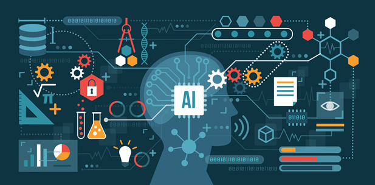

Apa itu kecerdasan buatan/ Artifical Intelligence ?
Kecerdasan buatan (AI) memungkinkan mesin untuk belajar dari pengalaman, menyesuaikan input-input baru dan melaksanakan tugas seperti manusia. Sebagian besar contoh AI yang Anda dengar dewasa ini – mulai dari komputer yang bermain catur hingga mobil yang mengendarai sendiri – sangat mengandalkan pembelajaran mendalam dan pemrosesan bahasa alamiah. Dengan menggunakan teknologi ini, komputer dapat dilatih untuk menyelesaikan tugas-tugas tertentu dengan memproses sejumlah besar data dan mengenali pola dalam data.
Sejarah Kecerdasan Buatan
Istilah kecerdasan buatan diciptakan pada tahun 1956, tetapi AI telah menjadi kian populer saat ini berkat peningkatan volume data, algoritme canggih, dan peningkatan daya serta penyimpanan komputasi. Riset AI awal pada tahun 1950-an mengeksplorasi topik-topik seperti penyelesaian masalah dan metode simbolik. Pada tahun 1960-an, Departemen Pertahanan AS menaruh minat terhadap jenis pekerjaan ini dan mulai melatih komputer-komputer untuk menirukan penalaran manusia yang mendasar. Misalnya, Defense Advanced Research Projects Agency (DARPA) menyelesaikan proyek pemetaan jalan pada tahun 1970-an. Dan DARPA menghasilkan asisten pribadi cerdas pada tahun 2003, jauh sebelum Siri, Alexa atau Cortana diberi nama.Pekerjaan awal ini membuka jalan bagi otomatisasi dan penalaran formal yang kita lihat di komputer saat ini, termasuk sistem pendukung keputusan dan sistem pencarian pintar yang dapat dirancang untuk melengkapi serta meningkatkan kemampuan manusia.Sementara film-film Hollywood dan novel fiksi ilmiah menggambarkan AI sebagai robot mirip manusia yang mengambil alih dunia, evolusi teknologi AI saat ini tidak begitu menakutkan – atau cukup pintar. Sebaliknya, AI telah berevolusi untuk memberikan banyak manfaat spesifik di setiap industri. Teruslah membaca tentang contoh modern kecerdasan buatan dalam perawatan kesehatan, retail, dan lainnya
Tahun 1950-1970-an. Jaringan Neural Pekerjaan awal dengan jaringan neural membangkitkan kegembiraan untuk “mesin berpikir.”
Tahun 1980-2010-an. Pembelajaran Mesin menjadi populer
Masa kini. Pembelajaran mendalam
Terobosan deep learning mendorong meroketnya AI.
Mengapa Kecerdasan buatan penting ?

AI mengautomasi pembelajaran dan penemuan berulang melalui data. Tetapi AI berbeda dengan automasi robotik yang digerakkan oleh perangkat keras. Alih-alih mengautomasi tugas manual, AI melakukan tugas-tugas yang sering, bervolume tinggi, terkomputerisasi dengan andal dan tanpa mengalami kelelahan. Untuk jenis automasi ini, penyelidikan manusia masih penting untuk mengatur sistem dan mengajukan pertanyaan yang tepat
AI menambahkan kecerdasan pada produk-produk yang ada. Di sebagian besar kasus, AI tidak dijual sebagai aplikasi individu. Akan tetapi, produk yang sudah Anda gunakan akan ditingkatkan dengan kemampuan AI, mirip seperti Siri yang ditambahkan sebagai fitur pada generasi baru produk Apple. Automasi, platform percakapan, bot, dan mesin pintar dapat dikombinasikan dengan sejumlah besar data untuk meningkatkan banyak teknologi di rumah dan di tempat kerja, mulai dari intelijen keamanan hingga analisis investasi
AI beradaptasi melalui algoritme pembelajaran progresif guna memungkinkan data melakukan pemrograman. AI menemukan struktur dan keteraturan dalam data sehingga algoritme memperoleh keterampilan: Algoritme menjadi pengklasifikasi atau prediktor. Jadi, sama seperti algoritme yang dapat mengajarkan dirinya sendiri cara bermain catur, AI dapat mengajarkan sendiri produk apa yang akan direkomendasikan berikutnya secara online. Dan model-model beradaptasi saat memberikan data baru. Propagasi belakang merupakan teknik AI yang memungkinkan model untuk beradaptasi, melalui pelatihan dan data yang ditambahkan, saat jawaban pertama tidak terlalu tepat.
AI menganalisis data lebih banyak dan lebih dalam menggunakan jaringan neural yang memiliki banyak lapisan tersembunyi. Membangun sistem deteksi penipuan dengan lima lapisan tersembunyi hampir tidak mungkin beberapa tahun yang lalu. Semuanya berubah dengan kekuatan komputer yang luar biasa dan big data. Anda memerlukan banyak data untuk melatih model pembelajaran mendalam karena model tersebut belajar langsung dari data. Semakin banyak data yang Anda umpankan kepada model, semakin akurat model tersebut.
AI mencapai keakuratan mengagumkan melalui jaringan neural mendalam – yang sebelumnya tidak dimungkinkan. Misalnya, interaksi Anda dengan Alexa, Google Search, dan Google Photos semuanya didasarkan pada pembelajaran yang mendalam – dan ketiganya terus menjadi semakin akurat karena kita semakin sering menggunakannya. Di bidang medis, teknik AI dari pembelajaran mendalam, klasifikasi citra, dan pengenalan objek sekarang dapat digunakan untuk menemukan kanker pada MRI dengan akurasi yang sama seperti ahli radiologi yang terlatih.
AI memanfaatkan sebagain besar data. Jika algoritme merupakan pembelajaran mandiri, data itu sendiri dapat menjadi kekayaan intelektual. Jawabannya ada dalam data; Anda hanya perlu menerapkan AI untuk mendapatkannya. Karena peran data kini semakin penting dari sebelumnya, data dapat menciptakan keunggulan kompetitif. Jika Anda memiliki data terbaik dalam industri kompetitif, bahkan jika seseorang menerapkan teknik serupa, data terbaiklah yang akan menang.
Bagaimana Kecerdasan Buatan Digunakan
Setiap industri memiliki permintaan yang tinggi akan kemampuan AI – khususnya sistem penjawab pertanyaan yang dapat digunakan untuk bantuan hukum, pencarian paten, pemberitahuan risiko, dan penelitian medis. Penggunaan lain AI mencakup:
Layanan Kesehatan Penerapan AI dapat memberikan pengobatan dan pembacaan sinar X yang dipersonalisasikan. Asisten layanan kesehatan pribadi dapat bertindak sebagai pelatih hidup, yang mengingatkan Anda untuk minum pil, olahraga, atau makan lebih sehat.
Manufaktur AI dapat menganalisis data IoT pabrik saat mengalir dari peralatan yang terhubung untuk memperkirakan beban dan permintaan yang diharapkan menggunakan jaringan berulang, jenis jaringan pembelajaran mendalam tertentu yang digunakan dengan data urutan.
Retail AI menyediakan kemampuan belanja virtual yang menawarkan rekomendasi yang dipersonalisasi dan mendiskusikan opsi pembelian dengan konsumen. Pengelolaan stok dan teknologi tata letak situs juga akan meningkat dengan AI.
Perbankan Kecerdasan Buatan meningkatkan kecepatan, presisi, dan keefektifan upaya manusia. Dalam lembaga keuangan, teknik AI dapat digunakan untuk mengidentifikasi transaksi mana yang kemungkinan merupakan penipuan, mengadopsi pemberian skor kredit yang cepat dan akurat, serta mengautomasi tugas-tugas pengelolaan data yang tajam secara manual.